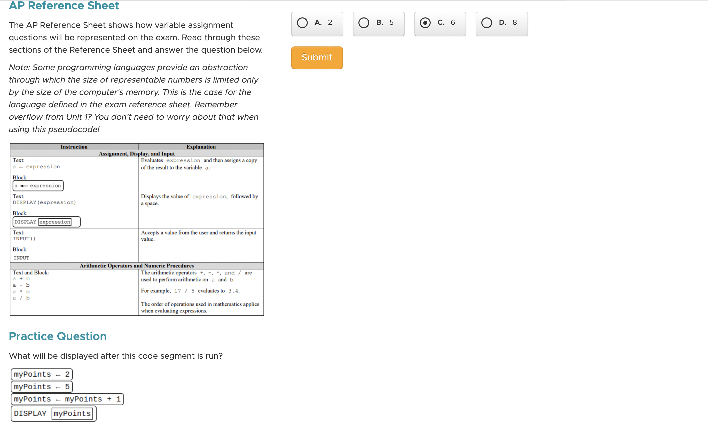
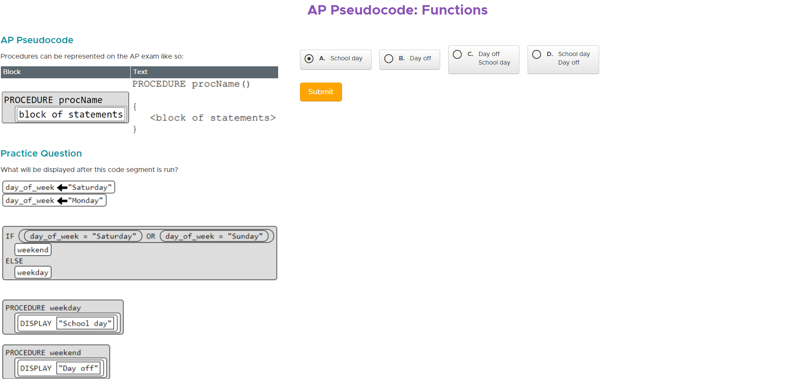
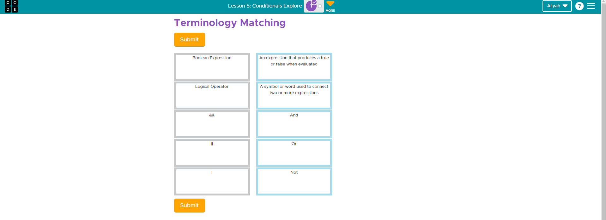
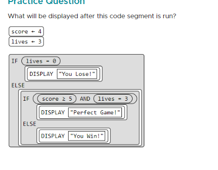
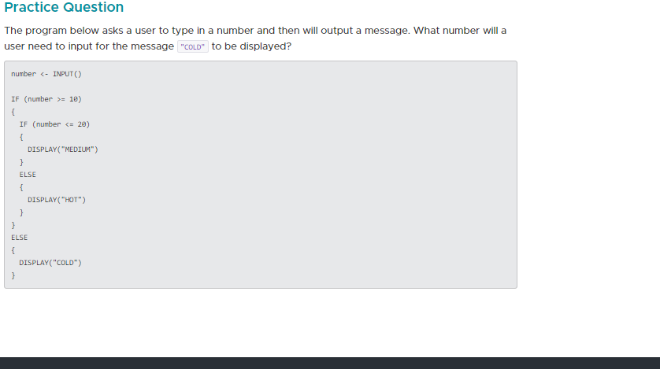

Web Development
Code.org Unit 1-4 Review
02/27/2024
Aliyah Pargan
Lesson#1 C.F.U
What will the value of score be at the end of the program? Lesson#2 C.F.U
Explain in your own words the process of creating and updating a variable. How does the Counter Pattern with Event work?To create a variable, we use the var block. Then you can add an onEvent which would allow the user to interact with the function and change the value. You can change the value in the var block. The counter pattern with event works by using an onEvent block. By clicking the function, it would increase the value of the variable by 1.
Lesson#3 C.F.U
What will be displayed after this code segment is run?  The program below is run. Which of the following COULD NOT possibly be the output from that program? "Lesson#4 C.F.U
Lesson#5 C.F.U
Can a computer evaluate an expression to something between true and false? Can you write an expression to deal with a "maybe" answer?A computer can evalute an expression to something between true and false usin the if else conditional statement and adding an or. Instead of using &&, if you use || it allows you to still evaluate a partially correct expression
Lesson#6 C.F.U
What does it mean to put the most specific case first? Why is it important to put the most specific case first? What types of errors does it help avoid?When creating an if-else-if statement, it is really important to make the most specific condition the first condition. When you run your code, the code is read from top to bottom. Therefore, putting the most specific case is important because it will be ran first. In addition, by putting the most specific case first, it will prevent errors such as the whole code not working or an error where the more general commands work and the specifics don't. All in all, putting the most specific case first means to put the code with the most specific and selective value. For example, if one statement has a value of ==15 and the other statement is <=100, the ==15 should be first since it is more specific.
Lesson#7 C.F.U
The answer is: You win!Lesson#8 C.F.U
The answer is 5Lesson#9 C.F.U
In your own words describe the benefits of creating functions in your code?The benefits of creating functions in my code is making it easier for the same step to repeat multiple times in my code. Once you define the function, you can call it other times in your code and it would work.
Lesson#10 C.F.U
What will be displayed after this code segment is run?